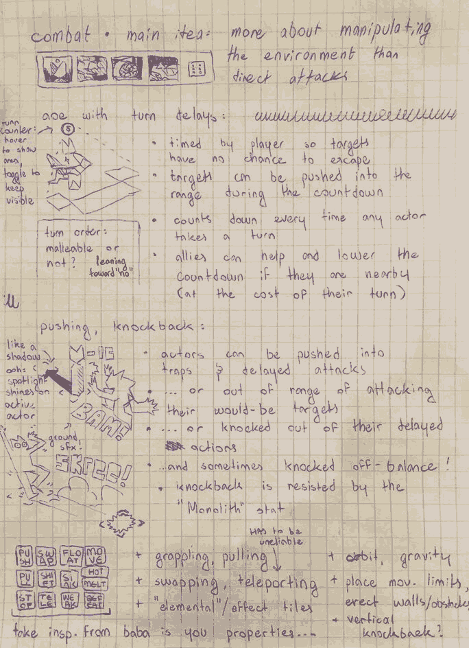
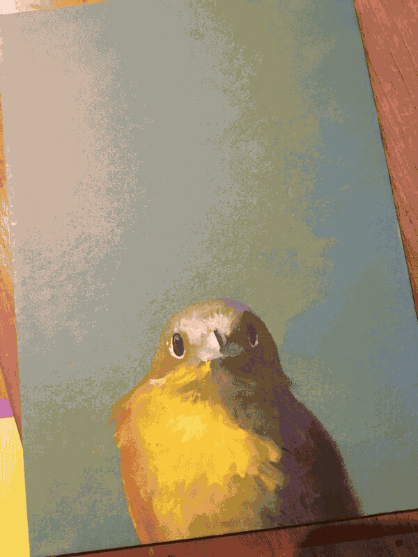
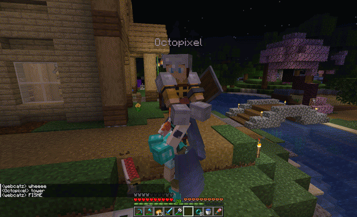
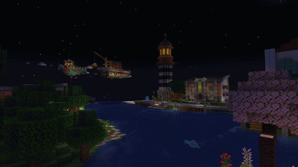

sorry for all the inactivity lately... i've been really wrapped up in life & working on other things!

i've (rather unwisely) started another godot project. or started coding a project that was already rolling around in my head. it's a dreamlike psychedelic isometric strategy rpg... thingy. it's very much a background project for whenever i don't feel like working on cat comic, but feel free to check it out on my github once it reaches a playable-ish state. or now. oh BTW i have a github now! mart inspired me (psps look at her awesome greg rpg!!). i think i'll be using it to upload little webapp demos i am inspired to make sometimes.

it's been a nice diversion from cat comic, on which progress has been going smoothly BTW! i've moved my notes from my little notepad to a proper notebook (big step!). its very cute its light blue with a little yellow bird peeking out from the bottom of the cover... thematically relevant and also matches cat comic colors! i wanna find/make some cool stickers to fill up the cover.
unfortunately though i think progress on all fronts might be slowing down now. at least it will if i know what's good for me. now that my college stuff is all figured out (congratulations me!!) i need to focus on finishing my senior project so i can actually get my diploma!
the timing of this all sucks though becaues the year is heading into winter and my energy levels have started to really slip. i hope my grades don't follow...
- assorted brainrots
hello! welcome to blog post #2. i'm coming up against the end of my week holiday with not a lot of the things i should've done actually done. still have that essay to finish... and my ed application to send... but the pressure is getting heavy enough that i'll have to get to work soon. (day of publishing update: i'm finishing it) doctors can you tell me how to do things without waiting for the deadline
what i've been doing instead over the week is mostly just playing a lot of minecraft. its got its teeth sunk into me good. tti has a minecraft server in which i've been having a lot of fun vibing with friends and building a little zone... i'll probably post pictures here at some point. expect that! maybe.
edit: here's some LOL...


anyway the second glass beach album was announced a few days ago... feels kind of unreal! i've already known about it because of the really fun arg the band has been doing on their neocities but it's so cool for it to actually be finally properly announced! the snippets from the arg + the two singles that have dropped so far have gotten me really freaking excited for this album... whatever song the "mayfly" snippets belong to and (given its description) whalefall will both probably destroy me. LOL as if rare animal hasn't already given me brainrot... i will be insufferable for a while once this album drops i think.
on the topic of insufferability i've been slowly converting everyone around me to the magnus archives. i finished s4 two days ago and i still haven't really recovered from its finale... only one season left now... i'm in love this podcast i don't want it to end!!!!! my thoughts on the last few seasons are like. the shift away from the statements-based mystery into more audio drama was a bit disconcerting at first but the deeper character arcs (martin) that got to happen as a result have more than supplemented that fault. also i was a bit worried that as we got more classifications for the horrors that haunt the podcast the fear they caused would gradually fade away... and it does at first but then they turn the classifications upside down into raw existential horror in such a delicious way. podcast rating 10/10 listen now please ! i started making a shrine (not done yet but you can look at it if you want)
- we're so back
i've been having a craving to journal again. i don't know how long this craving will last. this blog page will probably disappear again at some point, as it has time and time before—a little submarine surfacing then and again, drifting calmly, amidst the fish and the kelp, just under the most terrible of floods. the periscope lifts, now, and hooks itself on the fresh air before, somewhen, it loses purchase and tumbles slowly back into the depths.
i'm feeling rather stressed. it has taken me great pains to come to terms with the fact that i have not suddenly developed rabies or something, but i am, in fact, a breathing person who is feeling rather stressed. i'd not been the most "on top" of the college search, and it's biting me in the ass quite a bit now. it's not dangerously bad, far from it, but i do need to get my act together and my applications finalized. it's times like these that i curse my difficulties with productivity and timeliness... in short: i need adderall or something this can't be how people do it.
i've been getting really into the magnus archives recently, and by "getting really into", i mean "listening to it nearly every single moment i'm not actively doing something else". it's put some sort of spell on me where the only thing i can do is listen to my silly little podcasts while kicking my legs and giggling stupidly.
the magnus archives, for those who are unaware, (pitch incoming) is a horror-mystery fiction podcast. it follows the magnus institute's recently instated head archivist jonathan sims as he attempts to organize the institute's file archive, which has been left in a state of complete disarray by the previous archivist. the episodes take the form of individual "statements", 15-20 minute testimonies concerning encounters with the supernatural, read aloud by the frequently interrupted archivist as he converts them to audio format. as the episodes progress and their loose threads begin to converge, the archivist and his assistants find themselves caught, like so many flies, in a vast web of conspiracy and unknowable forces. i highly highly recommend checking it out (although do be warned that it's a slow burn and things only really start moving around episode 20-ish (but GOD GOD GOD IT GETS GOOD!!!!! AH HA HA HA!!!!)). yadda yadda monsters gripping mysteries etc but also the characters are all very fucking good and it invented martin blackwood so everyone should listen to it right now i think.
also that OTHER MOTHERFUCKER fucking FAVORITE moment of all time college can WAIT i have magnus archives to listen to ‼️ i'm sure the admissions officers will understand
i started writing this in a really midcentury british author voice for some reason. good night!